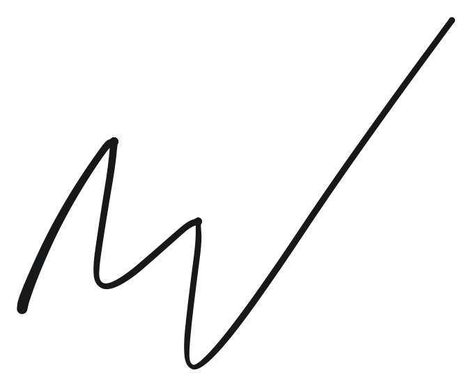

THE HUB
Onde Humanos Convergem
Não falta método para aprender uma nova língua.
Mas implementar é outra história.
a gente se apoia
-
Transformar o inglês em parte da minha rotina. Isso foi o que fez com que, quando eu me mudei para a Irlanda, eu nem estranhasse.
-- Francisco Vianna -
Faça os flashcards no Anki. Foram uma forma de repetir o vocabulário várias vezes e não esquecer.
-- Livia Chierice -
Eu fui de entender 5% para, dependendo do tópico, até 70%. Isso foi graças a assistir vídeos e tentar conversar com pessoas mesmo entendendo pouco.
-- Erica (エリカ)
a proposta
O aprendiz precisa de contato constante com a língua, e contato constante custa. O que te oferecemos é estrutura e energia através de um grupo organizado e comprometido.
como funciona
Você faz parte de uma Célula
3–5 alunos iniciam o processo de 3 meses juntos, e fazem uma a duas aulas semanalmente.
Células formam uma Malha
Uma Malha tem 3–5 Células. Uma vez por mês fazemos a Aula de Convergência, em que todos os alunos participam.
a Rede se Apoia
Temos um grupo de WhatsApp com todos os alunos. Nesse grupo, os professores enviam de segunda a sexta material de apoio e lembretes para o estudo.
A energia vem do coletivo
No começo do processo de 3 meses, cada aluno define um objetivo individual, e também cada Célula tem um objetivo em comum como grupo.
E isso só é possível se as aulas forem feitas para você, em um grupo comprometido, trabalhando a longo prazo.
visão coletiva de longo prazo
Um grupo de 3–5 pessoas começa junto. O objetivo de cada um é detalhado, junto com preferências, estilos, aptidões e nível atual. O seu objetivo se torna o objetivo do grupo, e vice-versa.
Ao final dos 3 meses trabalhando juntos, a Célula apresenta seu projeto às outras Células da Malha, e escolhe se inicia um próximo ciclo.
-
início
a Célula se forma
-
toda semana
a Célula se encontra em aulas semanais
-
todo mês
Aula de Convergência com toda a Malha
-
3 meses
a Célula apresenta seu projeto -- e escolhe se inicia próximo ciclo
organizador responsável
Matt Prado
Matt fala 10 línguas, 6 fluentemente. E tão importante quanto isso, é um aprendiz como você (aprendendo Hindi).
Com 15 anos de experiência em lecionar, formação na USP, Uni-Hamburg (Alemanha) e Cambridge (CELTA), percebeu que o que mais impede alunos de falar uma língua nova é parar os estudos.
Esse projeto é então um empreendimento para criar uma estrutura nova, onde a língua está acessível para quem já tem todos os recursos menos um: a constância natural em um grupo comprometido.
Por que aprender inglês?
Você já conhece os benefícios: acesso ao mundo.
Seja por você conhecer melhor o mundo ou pelo mundo reconhecer melhor você.
Mas o THE HUB é mais que ensinar inglês. O que oferecemos é participar de um grupo de pessoas igualmente comprometidas como você. Pessoas que são competentes como você, que entendem você, comprometidas como você, agora trabalhando juntas.
Por que agora?
Porque as janelas estão se fechando.
Sabe, li correspondências de meu trisavô John Ulic Burke falando do Brasil para seus parentes nos EUA em c. 1928:
hey-days dos U.S.A… Os brasileiros têm em sua… natureza criar um país que talvez sirva bem como modelo para futuras gerações"" data-en=""we look [in Brazil] toward a period of development for a long time to come, and on a scale that will rival the hey-days of the U.S.A… Brazilians have in their… nature the making of a country that may well serve as a model for future generations"">"olhamos [no Brasil] para um período de desenvolvimento por muito tempo, e numa escala que se rivalizará com os hey-days dos U.S.A… Os brasileiros têm em sua… natureza criar um país que talvez sirva bem como modelo para futuras gerações"
John Ulic Burke, c. 1928
Isso parece com o seu Brasil hoje?
As janelas para oportunidades hoje estão se fechando, e não abrindo. Esta é a chance que temos de nos posicionarmos favoravelmente e usar essa posição para criar um espaço saudável e protetor para as próximas gerações.
Por que aulas online em grupo?
Online te dá a oportunidade de encontrar afins mesmo à distância. Pessoas com o perfil do THE HUB não são fáceis de encontrar, e online é um formato em que podemos convergir. Além, claro, da conveniência já conhecida.
Por que o THE HUB?
Pela convergência de aprendizes, pela qualidade dos professores, e pela estrutura de permanência dos estudos.
Existem muitos bons métodos, mas todos precisam de permanência até alcançar o objetivo. E nisso te ajudamos.
Por que aulas em grupo e não individuais?
Um grupo apoia a permanência, cria variedade de estímulo (não só a voz e a cadência do professor), e com os laços cria um espaço de experiência que será nossa plataforma para projetos maiores.
Por que investir dinheiro?
Existem muitas opções que custam menos, ou até gratuitas. A diferença é: elas te levam o caminho inteiro até seu objetivo?
Conduzir uma reunião em inglês precisa de muito tempo de prática, e acumular tempo de prática precisa de permanência. O problema não é acesso ao inglês, o problema é permanência com o inglês.
Alcançar um objetivo assim não acontece em 3 semanas empolgadas, e sim em meses ou anos de estudo consistente.
Estudar sozinho é possível mas nem sempre plausível. Para que correr o risco de tentar sozinho e postergar mais um ano aprender inglês, se você pode participar agora mesmo de um grupo competente e comprometido? Chegar no final do ano e riscar uma meta ao invés de fazer uma promessa.
Inclusive, estaremos lá com você :)

M. V. Prado